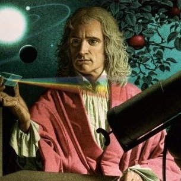

<!DOCTYPE html>
<html>
    <link rel="stylesheet" href="stylesheet.css"/>
    <title>Q1</title>
</html>
<div class="container">
    <div class="jumbotron">
        <div class="row">
        <div class="col-md-12">
            <h1 class="text-center">Sir Isaac Newton</h1>
            <h2 class="text-center">25 December 1642 – 20 March 1726</h2>
            <h3 class="text-center">One of the richest people in the 20th century</h3>
            <div class="center">Sir Isaac Newton was an English mathematician, physicist, astronomer, theologian, and author who is widely recognised as one of the greatest mathematicians and most influential scientists of all time. A key figure in the scientific revolution, his book Philosophiæ Naturalis Principia Mathematica (Mathematical Principles of Natural Philosophy), first published in 1687, established classical mechanics. Newton also made seminal contributions to optics, and shares credit with German mathematician Gottfried Wilhelm Leibniz for developing the infinitesimal calculus.
            </div>
            <div class="text-center">
                
            </div>
        </div>
        </div>
        <div class="row">
            <div class="col-md-12">
                <h3>The following list is a time line of Sir Newton's Life</h3>
                <ul>
                    <li><strong>1642</strong>Birth of Isaac Newton in Woolsthorpe, England.</li>
                    <li><strong>1661</strong>Newton enrolls in Trinity College, Cambridge.</li>
                    <li><strong>1665</strong>Newton receives his bachelor of arts from Trinity College.</li>
                    <li><strong>1669</strong>Newton appointed Lucasian Chair of Mathematics at Trinity, a position he will hold for the next thirty-four years.</li>
                    <li><strong>1672</strong>Newton elected to the Royal Society</li>
                    <li><strong>1687</strong>Publication of the complete Principia</li>
                    <li><strong>1689</strong>·Newton elected as Cambridge's representative to Parliament.</li>
                    <li><strong>1705</strong>Newton knighted by Queen Anne</li>
                    <li><strong>1727</strong>Death of Sir Isaac Newton, in London.</li>
                </ul>
                <div class="text-center">
                    <cite>
                        Read more about Sir Isaac Newton on <a href="https://en.wikipedia.org/wiki/Isaac_Newton" target="_blank">Wikipedia</a>.
                    </cite>
                </div>
            </div>
        </div>
    </div>
<footer>
    <cite>
        Writtern and coded by Sanjay
    </cite>
</footer>
</div>